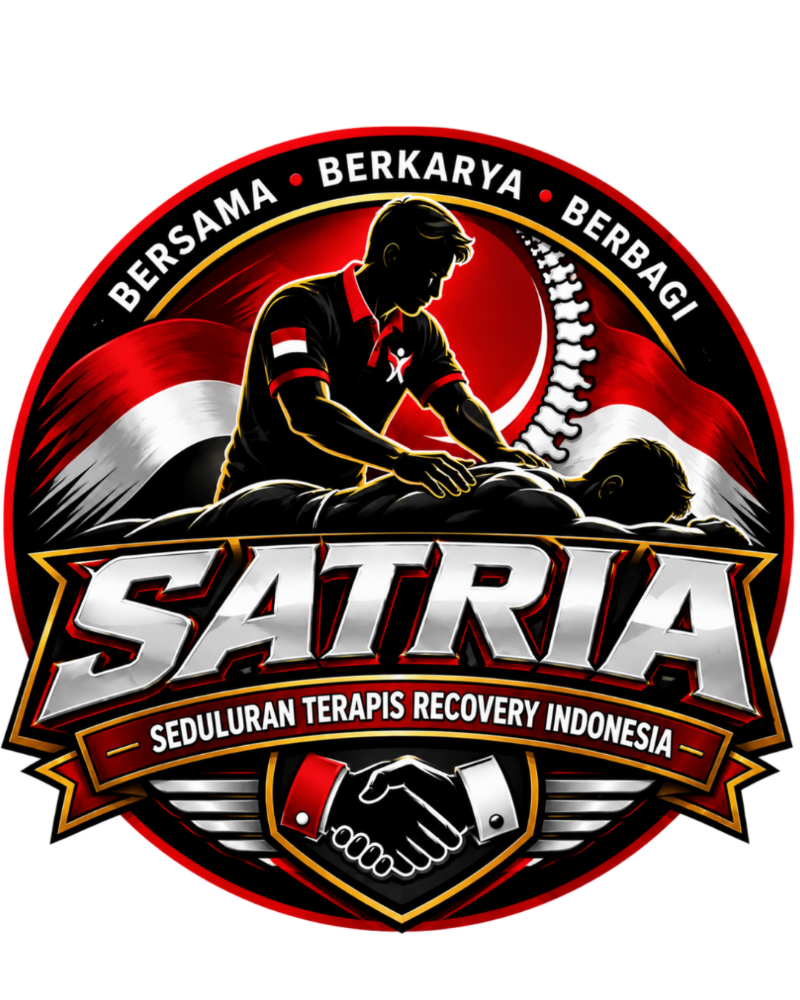

Ruang komunikasi internal komunitas terapis SATRIA. Hubungi anggota, pilih channel, dan kirim bantuan saat dibutuhkan.
Gunakan nama yang mudah dikenali anggota lain.
Tekan dan tahan tombol saat berbicara
Pilih channel yang sama di dua HP. Tekan dan tahan tombol mikrofon untuk berbicara, lalu lepaskan untuk mematikan mikrofon. Izinkan akses mikrofon saat diminta. Sandbox token server hanya untuk pengujian; sebelum dipakai komunitas secara luas, token harus dipindahkan ke endpoint backend yang aman. Browser dapat menghentikan audio saat layar terkunci.
Kirim laporan bantuan kepada komunitas. Lokasi hanya dilampirkan jika Anda mengizinkan.
Lokasi tidak diambil sebelum Anda menekan tombol berbagi. Matikan kapan saja untuk menghentikan pembaruan lokasi dari perangkat ini.